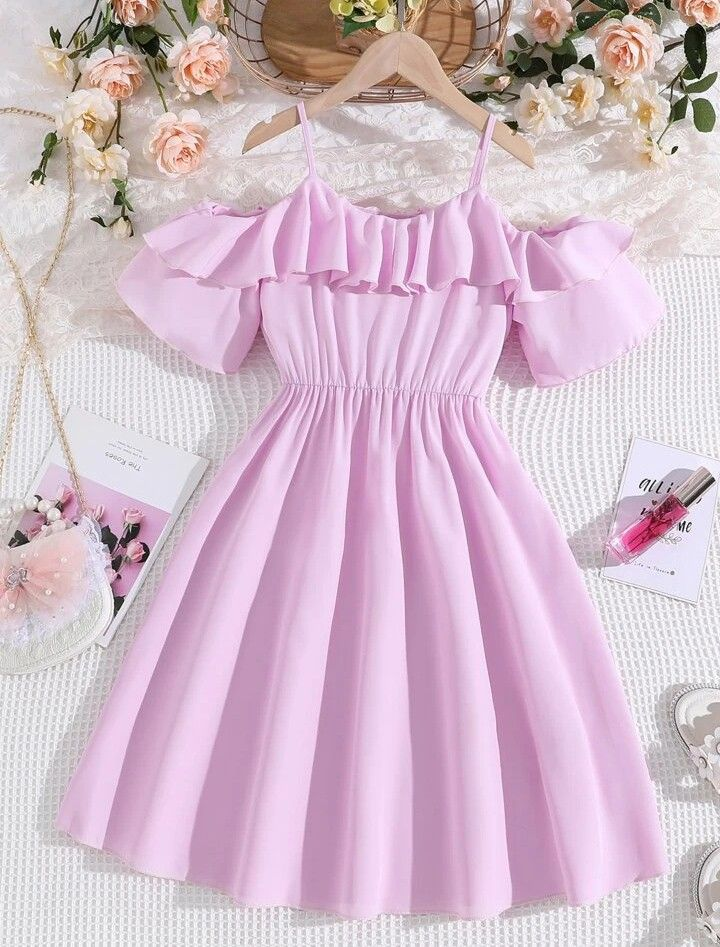

I've decided to keep some note to myself.
It has been 1 day since making the wish. My life had changed... or maybe it has not? Everyone acted as if I had been a girl my whole life. Everything feels both so natural and as if I have been transported to a different world altogether.
I used to not having any friends. But today, when I get to school, I was greeted with a few girls I was not familiar with, and they took me with them to lunch. Being included as one of the girls feel nice. Even though I couldn't follow any of their conversations. Girls' talk are so confusing.
Oh. I met with Kyubey today also. He took me out to do some "witch hunt" as he calls it. It is my duty to fight witches from now on as a magical girl, he said. I don't know what Witches are... maybe I'll ask him when I meet him later.
Mom and dad was so angry when I got home late today. They were already calling my school to ask for why I wasn't home. They said they would confiscate my phone for a week if I don't return home by 6 next time. They yelled at me again... I should try to go home sooner next time.
This morning, I took a long look at myself in the mirror.
It has been so long since the last time I saw myself in the mirror. Those eyes, those cheeks, the long hair, they are all me.
I don't think I have ever been this fixated on my own image for this long before. Every time I look at myself before that night, I couldn't stop the sickness I felt in my stomach. I feel allergic to my own image. I couldn't look at it for long.
But now. I have been staring at my own image for minutes. I feel a warmth in my chest I had never felt before.
The rest of the day went by in a blur. The birds are lively today, at least. I drawn a little comic in my textbook. It is nothing but scribbles, but at least it is something.
School was okay today. I think I am slowly getting used to my new heights now. I think I have shrunk by a few centimeters. I wasn't tall to begin with, so if anything, it blends me into crowds easier. I don't mind this height.
A few girls asked me if I can hang out with them during the weekends. They said that we can go shopping at the mall near school. They were talking something about testing out new nail polish colorings and the newly opened clothing shop in the vicinity. I don't think I understand anything they are talking about... I have never had any good experience buying clothes. I don't think I've ever selected out any myself even. Maybe this time will be different...
I met up with Kyubey again. I had texted them to ask for some extra time studying at school, so they wouldn't scream at me later on. I fought a big witch today... It is bigger than my grandma's house I think. I don't think I can make sense of what I saw in its face. I don't think it even had a face.
Something weird also happen to me today as well. I was fighting some "familiars", but I tripped and fell on a pebble. When I picked up the pebble, it turned into a spear right in front of my eyes. Is that what my power is?
Dad has been drinking again. He didn't lashed out at me, however. I get to sleep in peace tonight.
I would have to hang out with my friends tomorrow. They told me that we should do makeup before heading out.
I... didn't know how to do make up. I don't think mom allows me to have any either. But... I didn't want them to be mad at me, so I borrowed mom's makeup purse.
But I didn't know how to do anything. I rumbled through the purse for any instructions, any tutorial, nothing, not at all. I ended up putting so much things on my face that I couldn't stop coughing for almost half an hour. Cleaning them up, I put everything back to place and wiped off the mess I made on my face. Did this knowledge just comes for free for everyone else?
Even Kyubey made fun of the mess I have on my face when I was looking for witches.
Today marked one week after I made the wish.
I went to the mall with my friends today. I followed them behind their back as they led me from shop to shop. My legs couldn't keep up. How did they manage to move so fast?
We started by thrifting out a small clothing shop. This was the first time I have ever stepped into the women clothing aisle. Every time I tried to before, I was stopped by mom, pulling me back to get me an another t-shirt. The dresses here were so colorful and varied. While my friends were talking among themselves about what to try out first, I scouted the rackets and found a pretty dress. It is creamy pruple, reminding me of the sweet potato ice-cream cones I loved when I was young. The dress's had dropped shoulder, suspended by strings. It was so pretty.
I was going to put it back on to the rackets, but my friends creeped up behind me and told me to try it on. I was anxious at first, I didn't know that I was allowed to do this before. After a while inside the testing room, I looked at myself in the dress. I felt that warmth in my chest and face as I looked at myself. I twirled in place. I have never felt like this trying on clothes before.
I would have bought it, if it didn't cost 50 times more than my allowances. Everything else in the shop was around this cost as well. Why are girls' clothing so expensive anyway?
The solution has 6 letters: